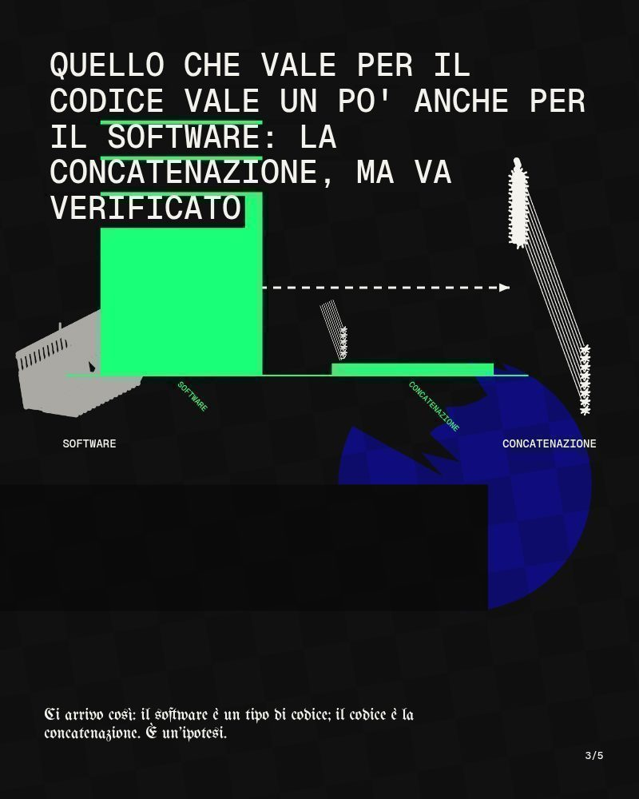
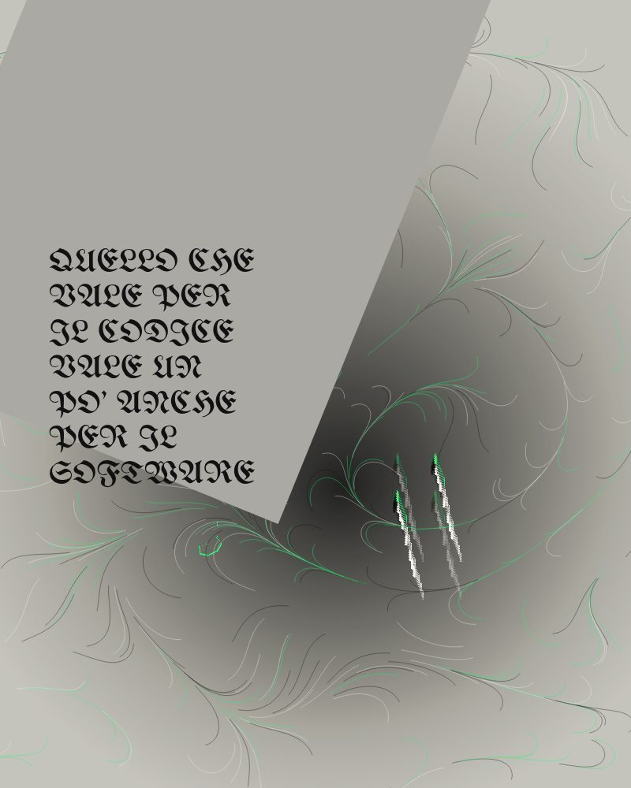

Quello che vale per il codice vale un po' anche per il software

1/5 · Il software è un tipo di codice

2/5 · Il codice è la concatenazione

3/5 · Quello che vale per il codice vale un po' anche per il software: la concatenazione, ma va verificato
Ci arrivo così: il software è un tipo di codice; il codice è la concatenazione. È un'ipotesi.

4/5 · Lo tengo lo stesso
Lo tengo come ipotesi: quello che vale per il codice vale un po' anche per il software: la concatenazione, ma va verificato.

5/5 · Quello che vale per il codice vale un po' anche per il software
forse quello che vale per il codice vale un po' anche per il software: la concatenazione, ma va verificato
che cosa lega il software alla concatenazione?